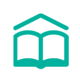

Categories
|  | |||
|---|---|---|---|
| Courses | Activities | Exploration | Case Studies |
| Cours | Activités | Exploration | Etudes de cas |
| Μαθήματα | Δραστηριότητες | Εξερευνήσεις | Μελέτες Περιπτώσεων |
| Kurse | Aktivitäten | Erkundung | Fallstudien |
| Cursos | Actividades | Exploración | Caso de estudio |
| corsi | attività | Indagine | Casi studio |
| Cursos | Atividades | Exploração | Estudos de casos |